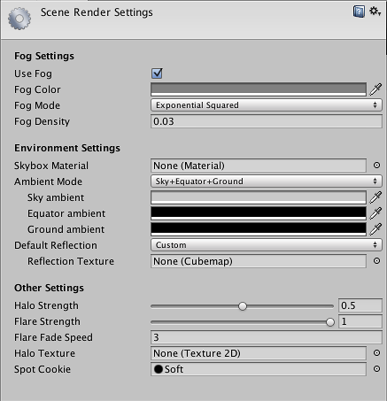

Scene Render Settings
The Scene Render Settings (menu: Edit > Scene Render Settings) contain default values for a range of visual elements in your scene, like Lights and Skyboxes.

Properties
| Property: | Function: |
|---|---|
| Fog Settings | |
| Use Fog | If enabled, fog will be drawn throughout your scene. |
| Fog Color | Color of the fog. |
| Fog Mode | Fog mode: Linear, Exponential (Exp) or Exponential Squared (Exp2). This controls the way fog fades in with distance. |
| Fog Density | Density of the fog; only used by Exp and Exp2 fog modes. |
| Linear Fog Start/End | Start and End distances of the fog; only used by Linear fog mode. |
| Environment Settings | |
| Skybox Material | Default skybox that will be rendered for cameras that have no skybox attached. |
| Ambient Mode | The method of adding ambient light to the scene. The options are Skybox, Sky+Equator+Ground, Hemisphere and Flat. |
| Skybox Exposure | The degree to which the skybox affects ambient lighting. (Skybox mode only.) |
| Create Light | Should Unity create a directional light that matches the skybox lighting? (Skybox mode only.) |
| Sky Ambient | Color of ambient light coming from above (Sky+Equator+Ground and Hemisphere modes only.) |
| Equator Ambient | Color of ambient light coming from the horizon (Sky+Equator+Ground mode only.) |
| Ground Ambient | Color of ambient light coming from below (Sky+Equator+Ground and Hemisphere modes only.) |
| Ambient Color | Ambient light color from all directions. (Flat mode only.) |
| Default Reflection | Default reflection map for the scene, used in conjunction with Reflection Probes. The options are Skybox and Custom. |
| Cubemap | Cubemap used for reflections (only when Default Reflection is set to Custom). |
| Other Settings | |
| Halo Strength | Size of all light halos in relation to their Range. |
| Flare Strength | Intensity of all flares in the scene. |
| Flare Fade Speed | Time taken for flares to fade out. |
| Halo Texture | Reference to a Texture that will appear as the glow for all Halos in lights. |
| Spot Cookie | Reference to a Texture2D that will appear as the cookie mask for all Spot lights. |
Details
Since the Render Settings define effects like ambient light, fog and skyboxes (effects that apply to most or all objects), they strongly affect the overall look of a scene. Each scene has its own separate render settings so you can, say, have fog switched on only for outdoor scenes. A very simple preview of the settings appears at the bottom of the inspector to let you get an idea of how the finished product will look.
Fog Settings
Fog obscures objects in the scene according to their distance from the camera until very distant objects disappear from view altogether. The settings let you choose the color of the fog and the way in which distance affects the obscuration.
Since distant objects cannot be seen through fog, they do not need to be drawn and so using fog can be a handy way to reduce rendering overhead. Note, though, that the culling of distant objects is actually determined by the camera's Far Clip Plane, not the fog itself - see the Camera component page for further details.
Technical note: for orthographic cameras, fog is rendered uniformly because the Z coordinate of the post-perspective space is used for the fog "depth". This is not strictly accurate for an orthographic camera but it is used for its performance benefits during rendering.
Environment Settings
The "environment" here refers to the ambient lighting and surrounding reflections available to the scene.
In the context of scene lighting, "ambient" means that the light does not come from any precise direction or source but rather represents light scattered by the atmosphere. The Ambient Mode option selects how the ambient light is generated in the scene. Skybox mode lets the skybox influence the pattern of lighting and you can optionally add a directional light that corresponds to the brightest point in the skybox image. The Sky+Equator+Ground and Hemisphere modes allow a different ambient light color to arrive from general directions. Hemisphere uses one color for light arriving from roughly above the object and another for light that originates from beneath (reflected up from the ground). Sky+Equator+Ground adds a third color for light coming from roughly the horizon level.
The Default Reflection is used with Reflection Probes as a default when an object is not within range of any probe in the scene. The default reflection can be set to use the scene skybox or any other cubemap.
Other Settings
The remaining settings mostly affect the appearance of light flares and halos in the scene. Additionally, the Spot Cookie defines a cookie that will be applied by default to all spotlights.